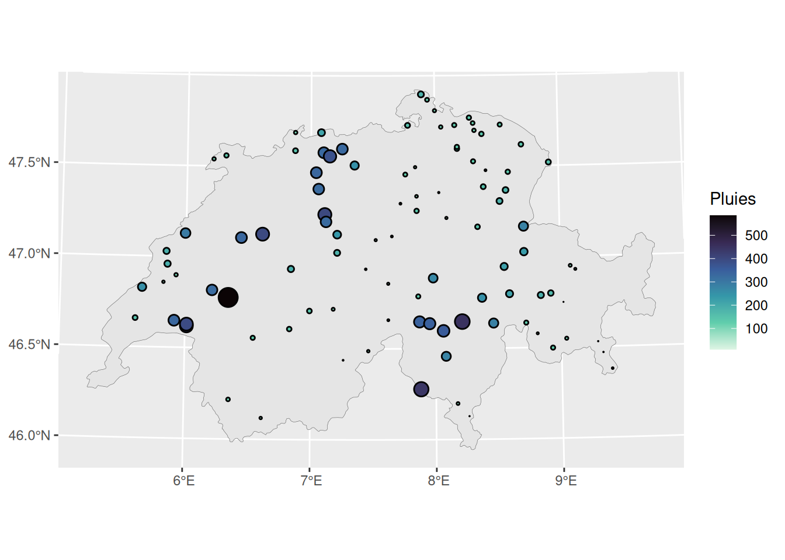
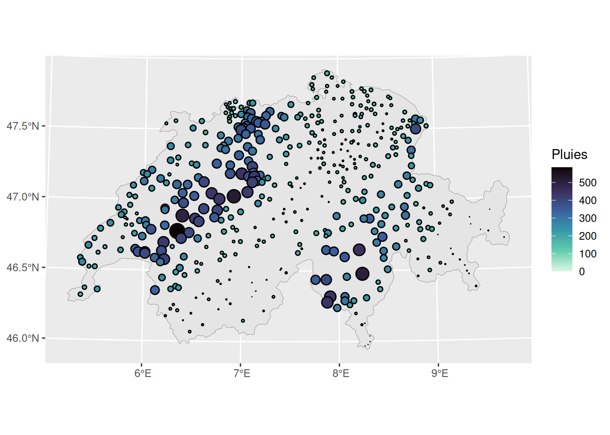
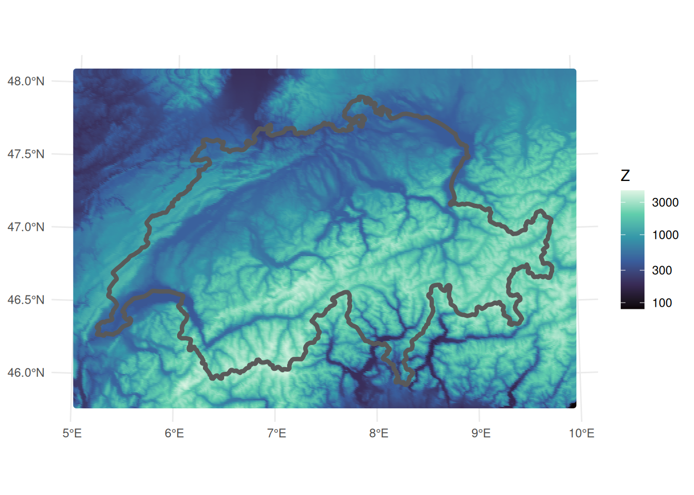

library(tidyverse)── Attaching core tidyverse packages ──────────────────────── tidyverse 2.0.0 ──
✔ dplyr 1.2.1 ✔ readr 2.2.0
✔ forcats 1.0.1 ✔ stringr 1.6.0
✔ ggplot2 4.0.3 ✔ tibble 3.3.1
✔ lubridate 1.9.5 ✔ tidyr 1.3.2
✔ purrr 1.2.2
── Conflicts ────────────────────────────────────────── tidyverse_conflicts() ──
✖ dplyr::filter() masks stats::filter()
✖ dplyr::lag() masks stats::lag()
ℹ Use the conflicted package (<http://conflicted.r-lib.org/>) to force all conflicts to become errorslibrary(ggforce)
library(gstat)
library(sf)Linking to GEOS 3.12.1, GDAL 3.8.4, PROJ 9.4.0; sf_use_s2() is TRUEdta_full_sf <- st_read(dsn = "swiss/swiss_rain_full.shp") Reading layer `swiss_rain_full' from data source
`/__w/statspat/statspat/swiss/swiss_rain_full.shp' using driver `ESRI Shapefile'
Simple feature collection with 467 features and 1 field
Geometry type: POINT
Dimension: XY
Bounding box: xmin: -159812 ymin: -109008 xmax: 172891 ymax: 105361
Projected CRS: Bern 1898 (Bern) / LV03Cdta_sf <- st_read(dsn = "swiss/swiss_rain.shp")Reading layer `swiss_rain' from data source
`/__w/statspat/statspat/swiss/swiss_rain.shp' using driver `ESRI Shapefile'
Simple feature collection with 100 features and 1 field
Geometry type: POINT
Dimension: XY
Bounding box: xmin: -140463 ymin: -92327 xmax: 150921 ymax: 105361
Projected CRS: Bern 1898 (Bern) / LV03Cbords_sf <- st_read(dsn = "swiss/bords.shp") Reading layer `bords' from data source `/__w/statspat/statspat/swiss/bords.shp' using driver `ESRI Shapefile'
Simple feature collection with 1 feature and 1 field
Geometry type: POLYGON
Dimension: XY
Bounding box: xmin: -169990 ymin: -111696 xmax: 177126 ymax: 108158
Projected CRS: Bern 1898 (Bern) / LV03Celev_sf <- st_read(dsn = "swiss/elev.shp") Reading layer `elev' from data source `/__w/statspat/statspat/swiss/elev.shp' using driver `ESRI Shapefile'
Simple feature collection with 95128 features and 1 field
Geometry type: POINT
Dimension: XY
Bounding box: xmin: -185556.4 ymin: -127261.5 xmax: 193184.2 ymax: 127252.2
Projected CRS: Bern 1898 (Bern) / LV03Cdta_sf |> st_coordinates() |> bind_cols(dta_sf) |> ggplot() +
geom_sf(data = bords_sf, linewidth = 0.1) +
geom_circle(aes(x0=X, y0=Y, r=pluies*10, fill = pluies)) +
scale_fill_viridis_c(name = "Pluies", option = "mako", direction = -1) 
dta_full_sf |> st_coordinates() |> bind_cols(dta_full_sf) |>
ggplot() +
geom_sf(data = bords_sf, linewidth = 0.1) +
geom_circle(aes(x0=X, y0=Y, r=pluies*10, fill = pluies)) +
scale_fill_viridis_c(name = "Pluies", option = "mako", direction = -1) 
elev_sf |> ggplot() +
geom_sf(aes(col = elevation)) +
geom_sf(data = bords_sf, fill = NA, linewidth = 1.5) +
theme_minimal() +
theme(legend.position = "right") +
scale_color_viridis_c(name = "Z", option = "mako", transform= "log10")